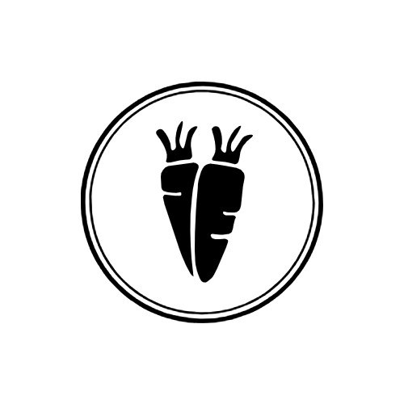
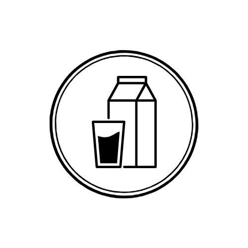
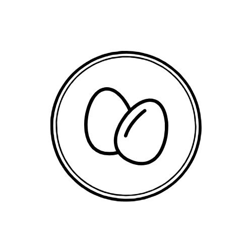
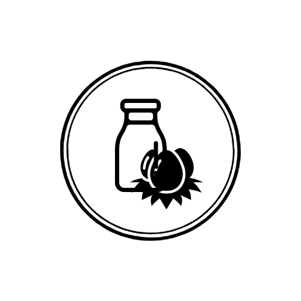
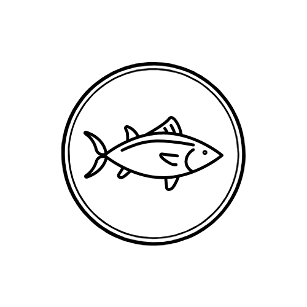
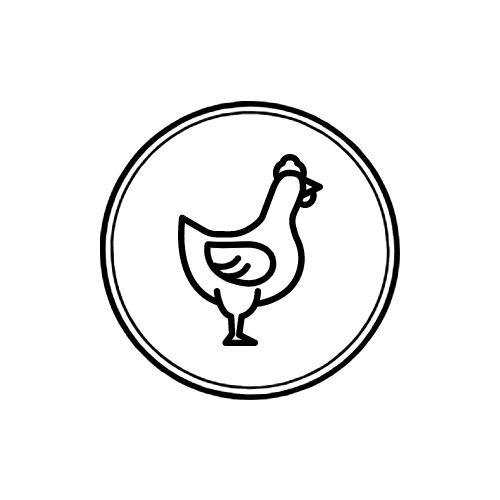
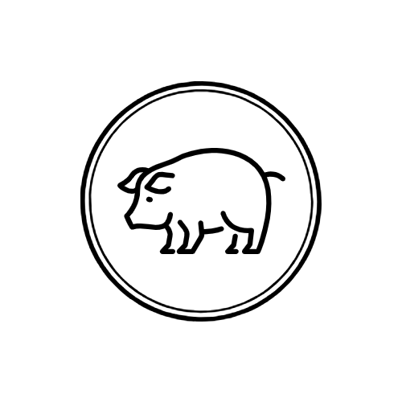

About Vegetarian Diet
MZ세대의 새로운 트렌드가 된 채식! 이왕이면 비건 팀과 함께 채식에 대해서 하나씩 알아봅시다.
채식 Vegetarian Diet
국제채식연맹(IVU)에 의하면 채식주의(vegetarianism) 란 쇠고기, 생선 등의 육류를 배제한 식물성 식단을 말합니다. 따라서 채식(vegetarian diet) 이란 동물성 음식을 섭취하지 않고 식물로 만든 음식을 섭취하는 것이며, 채식주의를 지향하고 채식을 실천하는 사람들을 채식주의자(vegetarian) 라고 합니다.
채식을 하는 이유
잘 짜인 채식 식단과 채식 위주의 식단은 각종 성인병을 예방하고 체질량지수를
양호하게 유지하는 데 도움이 되어 건강상의 이유 로 채식을 하는
사람들이 많습니다.
그 외에 채식을 시작하는 다른 보편적인 이유로는 동물 보호와 환경 보호가
있습니다.
육류 소비량이 증가하면서 그 수요를 충족하기 위해 공장식 축산이 이루어졌고,
많은 가축은 가혹한 환경에서 사육되고 있습니다. 또한 유엔 보고서에 따르면
축산업은 세계 온실가스의 18%를 배출하는 등 기후변화의 최대 원인 중
하나입니다. 이러한 축산업 관련 문제들이 조명되면서 동물권 과
환경 문제 해결 을 위해 채식을 하는 사람들이 많이 늘어났습니다.
단계별 채식의 종류
|  |  |  |  |
|---|---|---|---|
|  |  |  | |